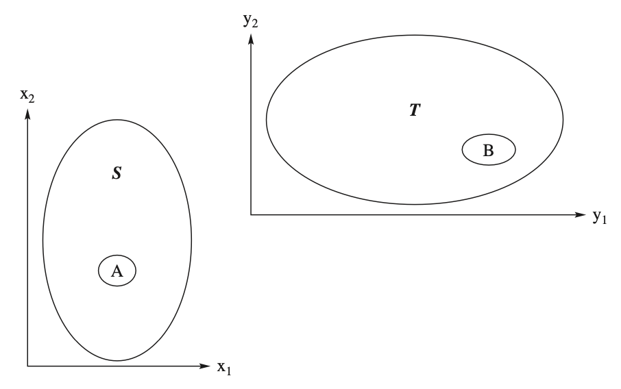

3 多變量分配與變數轉換
學生在大二已使用 Hogg, Tanis & Zimmerman 的 Probability and Statistical Inference 學過雙變量分配。該書 Chapter 4 已涵蓋 joint、marginal 與 conditional distributions、independence、covariance 與 correlation，Chapter 5.2 亦已介紹雙變量變數轉換。因此本章不將所有內容等量重教，而採取
\[ \boxed{\text{Recall}\longrightarrow\text{Deepen}\longrightarrow\text{Connect}} \]
的三階段安排：先快速喚醒二維隨機變數的基本工具，再推廣到 \(n\) 維隨機向量、共變異矩陣與多維變數轉換，最後連接線性組合、random sample、sample mean 與 sample variance。標題依 Hogg, McKean & Craig Chapter 2 的內容順序安排，各節不採等比例講解。
學習目標
完成本章後，學生應能：
- 由聯合分配求邊際與條件分配
- 處理二維與多維隨機變數轉換
- 計算共變異數、相關係數與共變異矩陣
- 判斷隨機變數的獨立性
- 使用向量與矩陣表示多維隨機變數的平均與共變異結構
- 計算隨機變數線性組合的期望、變異數與共變異數
- 說明 random sample、sample mean 與 sample variance 如何連接後續統計推論
必備的先備知識
第 1 章的分配函數、期望與單變量變數轉換，以及偏微分與基本矩陣運算。joint pmf / pdf、marginal distribution、conditional distribution、independence、covariance、correlation 與二維 Jacobian 視為大二已學內容，課堂中以診斷題與代表性例題快速喚醒。
- Stage 1 — Recall（快速）：Sections 2.1–2.5，對照大二課本 Chapter 4 與 Section 5.2，以 60–90 分鐘的 example-driven review 喚醒 joint、marginal、conditional、independence、covariance、correlation 與二維 transformation；不重走完整的 Definition–Theorem–Proof 流程。
- Stage 2 — Deepen（主體）：Sections 2.6–2.7。把二維概念推廣到 \(n\) 維 random vector，深入處理 covariance matrix、線性代數表示、多維 Jacobian，以及 one-to-one / many-to-one transformations。
- Stage 3 — Connect（橋接）：Section 2.8。以線性組合、random sample、\(\bar X\) 與 \(S^2\) 連接後續的 sampling distributions、sufficiency、likelihood 與 statistical inference。
Stage 1 — Recall：二維基本款快速喚醒
大二學過的，先確認能辨認、能設支持集、能完成積分；忘記的，再由代表性例題補回。
本階段的重點不是重複所有計算，而是確認學生能在離散與連續情形中，從 joint distribution 正確取得 marginal 與 conditional distributions，判斷 independence，計算 covariance / correlation，並在變數轉換時同時處理 Jacobian 與轉換後的支持集。
Distributions of two random variables
Definition
定義 3.1
Consider a random experiment with a sample space \({\mathcal{C}}\).
Define consider two random variables \(X_1\) and \(X_2\).
Assign to each element \(c\) of \({\mathcal{C}}\) one and only one ordered pair of numbers \(X_1(c) = x_1\), \(X_2(c) = x_2\).
Then,
\((X_1,X_2)\) is a random vector.
The space of \((X_1,X_2)\) is the set of ordered pairs \[{\mathcal{D}} = \{(x_1, x_2) : x_1 = X_1(c), x_2 = X_2(c), c \in {\mathcal{C}}\}.\]
Cumulative distribution function (cdf)
Let \(A\subset {\mathcal{D}}\).
Denote the probability of the event \(A\) as \(P_{X_1, X_2}[A]\).
\(P_{X_1, X_2}[A]\) is uniquely determined by the cumulative distribution function (cdf), which is given by \[F_{X_1,X_2}(x_1,x_2)=P[\{X_1 \le x_1\} \cap \{X_2 \le x_2\}],\] for all \((x_1, x_2)\in \mathbb{R}^2\).
Properties of cdf
- For all \(a_1<b_1\) and \(a_2<b_2\), show that \[\begin{aligned} P[a_1 < X_1 \le b_1,\ a_2 <X_2 \le b_2] &= F_{X_1,X_2}(b_1,b_2) - F_{X_1,X_2}(a_1,b_2) - F_{X_1,X_2}(b_1,a_2) + F_{X_1,X_2}(a_1,a_2) \end{aligned}\]
Discrete random vector
定義 3.2
Suppose \({\mathcal{D}}\) is finite or countable.
Let \(S\) denote the two-dimensional space of \(X_1\) and \(X_2\).
The joint probability mass function of \(X_1\) and \(X_2\). \[p_{X_1, X_2}(x_1,x_2)=P[X_1=x_1, X_2=x_2]\] for all \((x_1, x_2)\in {\mathcal{D}}\).
Conditions for joint pmf
\(0\le p_{X_1, X_2}(x_1,x_2)\le 1\).
\(\sum\sum_{(x_1, x_2)\in {\mathcal{D}}} p_{X_1, X_2}(x_1,x_2)=1\).
\(P[(X,Y)\in A]=\sum\sum_{(x_1,x_2)\in A} p_{X_1, X_2}(x_1,x_2)\).
Supplementary Example 2.1-A
Roll a pair of fair dice.
Let \(X\) denote the smaller and \(Y\) the larger outcome on the dice.
Find the joint pmf.
Note
The support of a discrete random vector \((X_1, X_2)\) is defined as \[\{(x_1, x_2) : p_{X_1, X_2}(x_1,x_2)>0 \}.\]
The definition of a pmf is extended to a convenient set by using zero elsewhere.
Continuous random vector
定義 3.3
A random vector \((X_1, X_2)\) with space \({\mathcal{D}}\) is of the continuous type if its cdf \(F_{X_1,X_2}(x_1,x_2)\) is continuous.
\(F_{X_1,X_2}(x_1,x_2)\) can be expressed as \[F_{X_1,X_2}(x_1,x_2) = \int_{-\infty}^{x_1}\int_{-\infty}^{x_2} f_{X_1,X_2}(w_1,w_2)dw_1dw_2,\] for all \((x_1, x_2)\in {\mathcal{D}}\).
The integrand is called the joint probability density function (pdf) of \((X_1, X_2)\).
Note
- We have \[\frac{\partial^2 F_{X_1,X_2}(x_1,x_2)}{\partial x_1\partial x_2} = f_{X_1,X_2}(x_1,x_2)\] except possibly on events that have probability zero.
Conditions for joint pdf
\(0\le f_{X_1, X_2}(x_1,x_2)\).
\(\int\int_{(x_1, x_2)\in {\mathcal{D}}} f_{X_1, X_2}(x_1,x_2)dx_1dx_2=1\).
For an event \(A\), \[P[(X,Y)\in A]=\int\int_{(x_1,x_2)\in A} f_{X_1, X_2}(x_1,x_2)dx_1dx_2.\]
Note
The support of a continuous random vector \((X_1, X_2)\) is defined as \[\{(x_1, x_2) : f_{X_1, X_2}(x_1,x_2)>0 \}.\]
The support is denoted as \({\mathcal{S}}\).
The definition of a pdf is extended to \(R^2\) by using zero elsewhere.
Special event
Let (\(X_1\), \(X_2\)) be a random vector.
Consider the event \(\{X_1\le x_1\}\).
We have \[\{X_1\le x_1\} = \{X_1\le x_1\} \cap \{-\infty<X_2<\infty\}\]
The probability of this event is \[F_{X_1}(x_1) = P[X_1\le x_1, -\infty<X_2<\infty]\] for all \(x_1\in \mathbb{R}\).
Marginal pmf
Let (\(X_1\), \(X_2\)) be a discrete random vector.
Find the probability of \(\{X_1\le x_1\}\) and the pmf of \(X_1\).
Supplementary Example 2.1-B
Let the joint pmf of \(X\) and \(Y\) be defined by \[f(x,y)=\frac{x+y}{21}, x=1, 2, 3; y=1, 2.\]
Find \(f_X(x)\) and \(f_Y(y)\).
Marginal pdf
Let (\(X_1\), \(X_2\)) be a continuous random vector.
Find the probability of \(\{X_1\le x_1\}\) and the pdf of \(X_1\).
Example 2.1.4
Let \(X\) and \(Y\) have the joint pdf\[f(x,y) = \left\{\begin{array}{ll} x+y & 0<x<1, 0<y<1\\ 0 & \text{elsewhere} \end{array}\right..\]
Find the marginal pdf of \(X\) and \(Y\), respectively.
Find \(P[X+Y\le 1]\).
Expectation – Discrete type
Let \(X_1\) and \(X_2\) be random variables of the discrete type with the joint pmf \(f(x_1, x_2)\) on the space \(S\).
If \(u(X_1, X_2)\) is a function of \(X_1\) and \(X_2\), then \[E[u(X_1, X_2)] = \sum\sum_{(x_1,x_2)\in S} u(x_1, x_2) f(x_1, x_2),\] if it exists, is called the mathematical expectation of \(u(X_1, X_2)\).
Remark
- If \[\sum\sum_{(x_1,x_2)\in S} |u(x_1, x_2)| f(x_1, x_2),\] converges, then \(E[u(X_1, X_2)]\) exists.
Expectation – Continuous type
Let \(X_1\) and \(X_2\) be random variables of the discrete type with the joint pdf \(f(x_1, x_2)\) on the space \(S\).
If \(u(X_1, X_2)\) is a function of \(X_1\) and \(X_2\), then \[E[u(X_1, X_2)] = \int\int_{(x_1,x_2)\in S} u(x_1, x_2) f(x_1, x_2) dx_1dx_2,\] if it exists, is called the mathematical expectation of \(u(X_1, X_2)\).
Remark
- If \[\int\int_{(x_1,x_2)\in S} |u(x_1, x_2)| f(x_1, x_2)dx_1dx_2<\infty,\] converges, then \(E[u(X_1, X_2)]\) exists.
Expectation
定理 3.1
Let \((X_1, X_2)\) be a random vector.
Let \(Y_1 = g_1(X_1, X_2)\) and \(Y_2 = g_2(X_1,X_2)\) be random variables whose expectations exist.
For all real numbers \(k_1\) and \(k_2\), we have \[E[k_1Y_1 + k_2Y_2] = k_1E[Y_1] + k_2E[Y_2].\]
Moment generating function
定義 3.4
Let \({\boldsymbol X} = (X_1,X_2)^{'}\) be a random vector.
If \(E[e^{t_1X_1+t_2X_2}]\) exists for \(|t_1| < h_1\) and \(|t_2| < h_2\), where \(h_1\) and \(h_2\) are positive.
It is denoted by \(M_{X_1,X_2}(t_1,t_2)\) and is called the moment generating function (mgf) of \({\boldsymbol X}\).
Note
Let \({\boldsymbol t} = (t_1,t_2)^{'}\).
Then we can write the mgf of \({\boldsymbol X}\) as \[M_{X_1,X_2} (t_1, t_2) = E[e^{{\boldsymbol t}^{'}{\boldsymbol X}}].\]
The mgfs of \(X_1\) and \(X_2\) are immediately seen to be \(M_{X_1,X_2} (t_1, 0)\) and \(M_{X_1,X_2} (0, t_2)\).
Example 2.1.7
Let \(X\) and \(Y\) have the joint pdf\[f(x,y) = \left\{\begin{array}{ll} e^{-y} & 0<x<y<\infty\\ 0 & \text{elsewhere} \end{array}\right..\]
Find \(M(t_1, t_2)\), \(M(t_1,0)\) and \(M(0, t_2)\).
Expected value
定義 3.5
Let \({\boldsymbol X} = (X_1,X_2)^{'}\) be a random vector.
Then the expected value of \({\boldsymbol X}\) exists if the expectations of \(X_1\) and \(X_2\) exist.
If it exists, then the expected value is given by \[E[{\boldsymbol X}] = \begin{bmatrix} E[X_1]\\E[X_2] \end{bmatrix}\]
Transformations: Bivariate random variables
Transformations – Discrete
Let \(p_{X_1,X_2}(x_1,x_2)\) be the joint pmf of two discrete-type random variables \(X_1\) and \(X_2\) with the support \({\mathcal{S}}\).
Let \(y_1 = u_1(x_1,x_2)\) and \(y_2 = u_2(x_1,x_2)\) define a one-to-one transformation that maps \({\mathcal{S}}\) onto \({\mathcal{T}}\) .
The joint pmf of the two new random variables \(Y_1 = u_1(X_1,X_2)\) and \(Y_2 = u_2(X_1,X_2)\) is given by \[\begin{align*} p_{Y_1, Y_2}(y_1, y_2) = \left\{ \begin{array}{ll} p_{X_1, X_2}(\omega_1(y_1, y_2), \omega_2(y_1, y_2)),&~(y_1, y_2)\in {\mathcal{T}}\\ 0 & \text{elsewhere}, \end{array}\right . \end{align*}\] where \(x_1 = \omega_1(y_1, y_2)\), \(x_2=\omega_2(y_1, y_2)\) is the single-valued inverse of \(y_1 = u_1(x_1,x_2)\) , \(y_2 = u_2(x_1,x_2)\).
Example 2.2.2
Consider an experiment in which a person chooses at random a point \((X_1,X_2)\) from the unit square \({\mathcal{S}} = \{(x_1,x_2): 0 < x_1 < 1, 0 < x_2 < 1\}\).
Suppose that our interest is not in \(X_1\) or in \(X_2\), but in \(Z = X_1 +X_2\).
Find the pdf of \(Z\).
Continuous transformation
Let \((X_1, X_2)\) have a jointly continuous distribution with pdf \(f_{X_1,X_2} (x_1, x_2)\) and support set \({\mathcal{S}}\).
Consider the transformed random vector \((Y_1, Y_2) = T (X_1, X_2)\) where \(T\) is a one-to-one continuous transformation.
Let \({\mathcal{T}} = T({\mathcal{S}})\) denote the support of \((Y_1,Y_2)\).
Rewrite the transformation in terms of its components as \[(Y_1, Y_2) = T(X_1, X_2) = (u_1(X_1, X_2), u_2(X_1, X_2)),\] where the functions \(y_1 = u_1(x_1, x_2)\) and \(y_2 = u_2(x_1, x_2)\) define \(T\).
Continuous transformation
Since the transformation is one-to-one, the inverse transformation \(T^{-1}\) exists.
Write \(x_1 = w_1(y_1, y_2)\), \(x_2 = w_2(y_1, y_2)\).
Define the Jacobian of the transformation which is the determinant of order 2 given by \[J = \left | \begin{array}{cc} \frac{\partial x_1}{\partial y_1} & \frac{\partial x_1}{\partial y_2}\\ \frac{\partial x_2}{\partial y_1} & \frac{\partial x_2}{\partial y_2}\\ \end{array}\right |\]
Continuous transformation
Let \(B\) be any region in \({\mathcal{T}}\).
Let \(A = T^{-1}(B)\).
Because the transformation \(T\) is one-to-one, \[\begin{aligned} P[(X_1,X_2) \in A] &= P[T(X_1,X_2) \in T(A)] \\ &= P[(Y_1,Y_2) \in B]. \end{aligned}\]

Continuous transformation
Based on the change-in-variable technique, we have \[\begin{aligned} P[(X_1,X_2)\in A] & = \int\int_A f_{X_1, X_2}(x_1, x_2) dx_1 dx_2\\ &=\int\int_{T(A)} f_{X_1, X_2}(T^{-1}(y_1, y_2)) |J|dy_1 dy_2\\ &=\int\int_B f_{X_1, X_2}(w_1(y_1,y_2), w_2(y_1, y_2)) |J|\,dy_1\,dy_2 \end{aligned}\]
The pdf of \((Y_1, Y_2)\) is \[f_{Y_1, Y_2}(y_1, y_2) = \left\{ \begin{array}{ll} f_{X_1, X_2}(w_1(y_1,y_2), w_2(y_1, y_2)) |J|, & (y_1, y_2) \in \mathcal{T}\\ 0 & \text{elsewhere} \end{array}\right .\]
Example 2.2.3
Consider an experiment in which a person chooses at random a point \((X_1,X_2)\) from the unit square \({\mathcal{S}} = \{(x_1,x_2) : 0 < x_1 < 1, 0 < x_2 < 1\}\).
Find the joint pdf of \(Y_1 = X_1+X_2\) and \(Y_2 = X_1-X_2\).
Example 2.2.5
Let \(X_1\) and \(X_2\) have the joint pdf \[f_{X_1, X_2}(x_1, x_2) = \left\{ \begin{array}{ll} 10x_1x_2^2, & 0<x_1<x_2<1\\ 0 & \text{elsewhere} \end{array}\right .\]
Find the pdf of \(Y_1 = X_1/X_2\).
Conditional Distributions and Expectations
Conditional distribution for discrete r.v.
Let \(X_1\) and \(X_2\) denote random variables of the discrete type.
Let the joint pmf be denoted as \(p_{X_1,X_2}(x_1,x_2)\) that is positive on the support set \({\mathcal{S}}\) and is zero elsewhere.
Let \(p_{X_1}(x_1)\) and \(p_{X_2}(x_2)\) denote, respectively, the marginal probability mass functions of \(X_1\) and \(X_2\).
Let \(x_1\) be a point in the support of \(X_1\), i.e., \(p_{X_1} (x_1) > 0\).
Using the definition of conditional probability, we have \[\begin{aligned} p_{X_2\mid X_1}(x_2\mid x_1) &= P[X_2=x_2\mid X_1=x_1] \\ &= \frac{P[X_1=x_1, X_2=x_2]}{P[X_1=x_1]} \\ &= \frac{p_{X_1, X_2}(x_1, x_2)}{p_{X_1}(x_1)} \end{aligned}\] for all \(x_2\in {\mathcal{S}}_{X_2}\).
Properties
\(\sum_{x_2} p_{X_2|X_1}(x_2|x_1) =1\).
\(p_{X_2|X_1}(x_2|x_1)>0\) for all \(x_2\in {\mathcal{S}}_{X_2}\).
\(p_{X_2|X_1}(x_2|x_1)\) is called the conditional pmf of the discrete type of random variable.
Conditional distribution for continuous r.v.
Let \(X_1\) and \(X_2\) denote random variables of the continuous type.
Let the joint pdf be denoted as \(f_{X_1,X_2}(x_1,x_2)\) that is positive on the support set \({\mathcal{S}}\) and is zero elsewhere.
Let \(f_{X_1}(x_1)\) and \(f_{X_2}(x_2)\) denote, respectively, the marginal probability density functions of \(X_1\) and \(X_2\).
When \(f_{X_1} (x_1) > 0\), we define \[\begin{aligned} f_{X_2\mid X_1}(x_2\mid x_1) &= \frac{f_{X_1, X_2}(x_1, x_2)}{f_{X_1}(x_1)}. \end{aligned}\]
Properties
\(\int_{-\infty}^{\infty} f_{X_2|X_1}(x_2|x_1) dx_2=1\).
\(f_{X_2\mid X_1}(x_2\mid x_1)\ge 0\) for all \(x_2\in {\mathcal{S}}_{X_2}\).
\(f_{X_2|X_1}(x_2|x_1)\) is called the conditional pdf of the continuous type of random variable.
Conditional probability of continuous r.v.
- If the random variables are of the continuous type, the conditional probability that \(a < X_2 < b\), given that \(X_1 = x_1\), is \[\begin{align*} P[a<X_2<b|X_1=x_1] = \int_{a}^{b} f_{X_2|X_1}(x_2|x_1)dx_2 \end{align*}\]
Conditional expectation of r.v.
If \(u(X_2)\) is a function of \(X_2\), the conditional expectation of \(u(X_2)\), given that \(X_1 = x_1\), if it exists, is given by \[\begin{align*} E[u(X_2)|X_1=x_1] = \left\{ \begin{array}{ll} \sum_{x_2} u(x_2) p_{X_2|X_1}(x_2|x_1), &\text{Discrete}\\ \int_{x_2} u(x_2) f_{X_2|X_1}(x_2|x_1) dx_2, &\text{Continuous} \end{array}\right . \end{align*}\]
The conditional variance of \(X_2\), given that \(X_1 = x_1\), if it exists, is given by \[\begin{align*} \operatorname{Var}(X_2\mid X_1=x_1) &= E\!\left[(X_2-E[X_2\mid X_1=x_1])^2\mid X_1=x_1\right] \\ &= E[X_2^2\mid X_1=x_1]-\left(E[X_2\mid X_1=x_1]\right)^2 \end{align*}\]
Example 2.3.1
Let \(X_1\) and \(X_2\) have the joint pdf \[f_{X_1, X_2}(x_1, x_2) = \left\{ \begin{array}{ll} 2, & 0<x_1<x_2<1\\ 0 & \text{elsewhere} \end{array}\right .\]
Find \(f_{X_1|X_2}(x_1|x_2)\) and \(f_{X_2|X_1}(x_2|x_1)\).
Example 2.3.1 (continued)
Let \(X_1\) and \(X_2\) have the joint pdf \[f_{X_1, X_2}(x_1, x_2) = \left\{ \begin{array}{ll} 2, & 0<x_1<x_2<1\\ 0 & \text{elsewhere} \end{array}\right .\]
Find \(E[X_1|x_2]\) and \(\operatorname{Var}(X_1|x_2)\).
Supplementary Example 2.3-A
Let \(X_1\) and \(X_2\) have the joint pdf \[f_{X_1, X_2}(x_1, x_2) = \left\{ \begin{array}{ll} 2, & 0<x_1<x_2<1\\ 0 & \text{elsewhere} \end{array}\right .\]
Find \(P[0<X_1<\frac{1}{2}|X_2 =\frac{3}{4}]\) and \(P[0<X_1<\frac{1}{2}]\)
Conditional variance and variance
定理 3.2
Let \((X_1,X_2)\) be a random vector such that the variance of \(X_2\) is finite.
We have
\(E[E[X_2|X_1]] = E[X_2]\).
\(\operatorname{Var}(E[X_2|X_1]) \le \operatorname{Var}(X_2)\).
Independent random variables
Independence
定義 3.6
Let the random variables \(X_1\) and \(X_2\) have the joint pdf \(f(x_1,x_2)\) [joint pmf \(p(x_1,x_2)\)].
Let the marginal pdfs [pmfs] \(f_1(x_1) [p_1(x_1)]\) and \(f_2(x_2) [p_2(x_2)]\).
\(X_1\) and \(X_2\) are said to be independent if, and only if, \[f(x_1, x_2) \equiv f_1(x_1)f_2(x_2) [p(x_1, x_2) \equiv p_1(x_1)p_2(x_2)].\]
Random variables that are not independent are said to be dependent.
Remark
The product of two positive functions \(f_1(x_1)f_2(x_2)\) means a function that is positive on the product space.
There may be certain points \((x_1,x_2) \in {\mathcal{S}}\) at which \(f(x_1,x_2) \ne f_1(x_1)f_2(x_2)\). However, if \(A\) is the set of points \((x_1,x_2)\) at which the equality does not hold, then \(P(A) = 0\).
Supplementary Example 2.5-A
Suppose an urn contains 10 blue, 8 red, and 7 yellow balls that are the same except for color.
Suppose 4 balls are drawn without replacement.
Let \(X\) and \(Y\) be the number of red and blue balls drawn.
Are \(X\) and \(Y\) independent?
Independence
定理 3.3
Let the random variables \(X_1\) and \(X_2\) have supports \({\mathcal{S}}_1\) and \({\mathcal{S}}_2\), respectively, and have the joint pdf \(f(x_1,x_2)\).
Then \(X_1\) and \(X_2\) are independent if and only if \(f(x_1,x_2)\) can be written as a product of a nonnegative function of \(x_1\) and a nonnegative function of \(x_2\).
That is, \[f(x_1,x_2) ≡ g(x_1)h(x_2),\] where \(g(x_1) > 0\), \(x_1\in {\mathcal{S}}_1\), zero elsewhere, and \(h(x_2) > 0\), \(x_2\in {\mathcal{S}}_2\), zero elsewhere.
Class Example 2.5-A
Let \(X_1\) and \(X_2\) have the joint pdf \[f_{X_1, X_2}(x_1, x_2) = \left\{ \begin{array}{ll} 4xe^{-x^2}ye^{-y^2}, & x>0, y>0\\ 0 & \text{elsewhere} \end{array}\right .\]
Are \(X_1\) and \(X_2\) independent?
Example 2.5.2
Let \(X_1\) and \(X_2\) have the joint pdf \[f_{X_1, X_2}(x_1, x_2) = \left\{ \begin{array}{ll} 8x_1x_2 & 0<x_1<x_2<1\\ 0 & \text{elsewhere} \end{array}\right .\]
Are \(X\) and \(Y\) independent?
Independence
定理 3.4
Let \(X_1\) and \(X_2\) have the joint cdf \(F(x_1,x_2)\).
Let \(X_1\) and \(X_2\) have the marginal cdfs \(F_1(x_1)\) and \(F_2(x_2)\).
Then \(X_1\) and \(X_2\) are independent if and only if \[F(x_1,x_2) = F_1(x_1) F_2(x_2)\] for all \((x_1, x_2) \in R^{2}\).
Independence
定理 3.5
- \(X_1\) and \(X_2\) are independent if and only if \[P[a<X_1\le b, c<X_2\le d] = P[a<X_1\le b]P[c<X_2\le d]\] for every \(a<b\) and \(c<d\), where \(a, b, c, d\) are constants.
Independence
定理 3.6
Suppose \(X_1\) and \(X_2\) are independent.
Suppose \(E[u(X_1)]<\infty\) and \(E[\nu(X_2)]<\infty\).
We have \[E[u(X_1)\nu(X_2)] = E[u(X_1)]E[\nu(X_2)].\]
Independence
定理 3.7
Suppose \(M(t_1, t_2)<\infty\).
Then \(X_1\) and \(X_2\) are independent if and only if \[M(t_1, t_2) = M(t_1, 0) M(0, t_2).\]
Example 2.5.5
Let \(X_1\) and \(X_2\) have the joint pdf \[f_{X_1, X_2}(x_1, x_2) = \left\{ \begin{array}{ll} e^{-x_2} & 0<x_1<x_2<\infty\\ 0 & \text{elsewhere} \end{array}\right .\]
Find \(M(t_1, t_2)\).
Show that \(M(t_1, t_2) \ne M(t_1, 0) M(0, t_2).\)
The correlation coefficient
Covariance
定義 3.7
Let \((X, Y)\) have a joint distribution.
Denote the means of \(X\) and \(Y\) by \(\mu_1\) and \(\mu_2\) and their respective variances by \(\sigma_1^2\) and \(\sigma_2^2\).
The covariance of \((X, Y)\) is denoted by cov(\(X\), \(Y\)) and is defined by the expectation \[\operatorname{cov}(X, Y) = E[(X - \mu_1)(Y - \mu_2)].\]
Note
- The covariance of \(X\) and \(Y\) can also be expressed as \[\operatorname{cov}(X, Y) = E[XY] - \mu_1\mu_2.\]
Correlation coefficient
定義 3.8
- If each of \(\sigma_1\) and \(\sigma_2\) is positive, then the correlation coefficient between \(X\) and \(Y\) is defined by \[\rho = \frac{\operatorname{cov}(X, Y)}{\sigma_1\sigma_2}.\]
Note
- The expected value of the product of two random variables is equal to the product of their expectations plus their covariance; \[E[XY] = \mu_1\mu_2 + \operatorname{Cov}(X, Y) = \mu_1\mu_2 + \rho\sigma_1\sigma_2.\]
Supplementary Example 2.4-A
A fair coin is flipped three times.
\(X_1\) is the number of heads on the first two flips while \(X_2\) is the number of heads on all three flips.
Find the correlation coefficient of \((X_1,X_2)\).
Correlation coefficient1
定理 3.8
- For all jointly distributed random variables \((X,Y)\) whose correlation coefficient \(\rho\) exists, \(-1 \le \rho\le 1\).
Note
A quadratic equation is said positive when its discriminant is negative.
Define the quadratic equation as \(y = ax^2+bx+c\).
The discriminant is \(b^2-4ac\).
Independence
定理 3.9
- If \(X\) and \(Y\) are independent random variables, then \[\rho = 0.\]
Class Example 2.4-A
Let \(X\) and \(Y\) be jointly discrete random variables whose distribution has mass 1/4 at each of the four points (-1, 0), (0, -1), (1, 0) and (0, 1).
Find the correlation coefficient of \((X_1,X_2)\).
Are \(X\) and \(Y\) independent?
Linear function
定理 3.10
Suppose \((X, Y)\) have a joint distribution with the variances of \(X\) and \(Y\) finite and positive.
Denote the means and variances of \(X\) and \(Y\) by \(\mu_1\), \(\mu_2\) and \(\sigma_1^2\), \(\sigma_2^2\).
Let \(\rho\) be the correlation coefficient between \(X\) and \(Y\).
If \(E[Y|X]\) is linear in \(X\) then \[E[Y|X] = \mu_2 + \rho\frac{\sigma_2}{\sigma_1}(X-\mu_1)\] and \[E[\operatorname{Var}(Y|X)] = \sigma_2^2 (1-\rho^2).\]
Example 2.4.2
Let the random variables X and Y have the linear conditional means \(E(Y |x) = 4x + 3\) and \(E(X|y) = \frac{1}{16} y - 3\).
Can \(\mu_1\), \(\mu_2\), \(\rho\), \(\sigma_1\) and \(\sigma_2\) be obtained?
Stage 2 — Deepen：由二維推廣到多維
從兩個變數的逐項計算，提升為 random vector、matrix 與一般維度的表示。
大二教材主要集中在雙變量情形；本階段是本章的主要新內容。學習重點是用向量與矩陣統整平均數、變異數與共變異數，理解 covariance matrix 的結構，並將二維 transformation 的方法推廣到多維與 many-to-one 情形。
Extension to several random variables
Random vector
定義 3.9
Consider a random experiment with a sample space \({\mathcal{C}}\).
Let the random variable \(X_i\) assign to each element \(c \in {\mathcal{C}}\) one and only one real number \(X_i(c) = x_i\), \(i = 1,2,...,n\).
Then,
\({\boldsymbol X} = (X_1,X_2, \cdots, X_n)\) is a \(n\)-dimensional random vector.
The space of \({\boldsymbol X}\) is the set of ordered \(n\)-tuples \[{\mathcal{D}} = \{(x_1, x_2, \ldots, x_n) : x_1 = X_1(c), \ldots, x_n = X_n(c), c \in {\mathcal{C}}\}.\]
Furthermore, let \(A\) be a subset of the space \({\mathcal{D}}\). Then \(P[(X_1,\cdots,X_n) \in A] = P[C]\), where \(C = \{c: c \in {\mathcal{C}}\}\) and \((X_1(c), X_2(c), \cdots, X_n(c)) \in A\).
Cumulative distribution function (cdf)
Let \(A\subset {\mathcal{D}}\).
Denote the probability of the event \(A\) as \(P_{X_1, X_2, \ldots, X_n}[A]\).
\(P_{X_1, X_2, \ldots, X_n}[A]\) is uniquely determined by the cumulative distribution function (cdf), which is given by \[F_{\boldsymbol X}(x_1,x_2, \ldots, x_n)=P[X_1 \le x_1, \ldots, X_n \le x_n],\] for all \((x_1, x_2,\ldots, x_n)\in \mathbb{R}^n\).
Cumulative distribution function (cdf)
Discrete random vector \[F_{\boldsymbol X}(x_1,x_2, \ldots, x_n)=\sum\cdots\sum_{\omega_1\le x_1,\ldots,\omega_n\le x_n}p(\omega_1, \ldots, \omega_n)\]
Continuous random vector \[F_{\boldsymbol X}(x_1,x_2, \ldots, x_n)=\int_{-\infty}^{x_1}\cdots\int_{-\infty}^{x_n}f(\omega_1, \ldots, \omega_n)\,d\omega_1\cdots d\omega_n.\] Moreover, \[\frac{\partial^n}{\partial x_1\cdots\partial x_n}F_{\boldsymbol X} ({\boldsymbol x}) = f({\boldsymbol x}).\]
Example 2.6.1
Let the random variables \(X\), \(Y\) and \(Z\) have the joint pdf defined as \[f(x, y, z) = \left\{ \begin{array}{ll} e^{-x+y+z} & 0<x,y, z<\infty\\ 0 & \text{elsewhere} \end{array}\right .\]
Find the distribution funtion of \(X\), \(Y\) and \(Z\).
Expectation for discrete random vector
Let \({\boldsymbol X} = (X_1, X_2, \ldots, X_n)\) be a random vector.
Let \(Y = u(X_1, X_2, \ldots, X_n)\) for some function \(u\).
Then \[\begin{aligned} E[u(X_1, X_2, \ldots, X_n)] &= \sum\cdots\sum_{(x_1,\ldots, x_n)\in {\mathcal{D}}} u(x_1, \ldots, x_n) f(x_1, \ldots, x_n), \end{aligned}\] if it exists, is called the mathematical expectation of \(u(X_1, \ldots, X_n)\).
Expectation for continuous random vector
Let \({\boldsymbol X} = (X_1, X_2, \ldots, X_n)\) be a random vector.
Let \(Y = u(X_1, X_2, \ldots, X_n)\) for some function \(u\).
Then \[\begin{aligned} E[u(X_1, \ldots, X_n)] &= \int\cdots\int_{(x_1,\ldots, x_n)\in {\mathcal{D}}} u(x_1, \ldots, x_n) f(x_1, \ldots, x_n) dx_1\cdots dx_n, \end{aligned}\] if it exists, is called the mathematical expectation of \(u(X_1, \ldots, X_n)\).
Marginal pmf
Let (\(X_1\), \(\ldots\), \(X_n\)) be a random vector.
Find the pmf of \(X_1\).
Note
Take any group of \(k < n\) of these random variables and find the joint pmf of them.
This joint pmf is called the marginal pmf of this particular group of \(k\) variables.
Marginal pdf
Let (\(X_1\), \(\ldots\), \(X_n\)) be a random vector.
Find the probability of \(\{X_1\le x_1\}\) and the pdf of \(X_1\).
Note
Take any group of \(k < n\) of these random variables and find the joint pdf of them.
This joint pdf is called the marginal pdf of this particular group of \(k\) variables.
Conditional distribution for discrete type
Let \(x_1\) be a point in the support of \(X_1\), i.e., \(p_{X_1} (x_1) > 0\).
Using the definition of conditional probability, we have \[\begin{aligned} p_{X_2, \ldots, X_n|X_1}(x_2, \cdots, x_n|x_1) =&P[X_2=x_2, \cdots, X_n=x_n|X_1=x_1] \\=& \frac{p_{\boldsymbol X}(x_1, x_2, \cdots, x_n)}{p_{X_1}(x_1)}. \end{aligned}\]
Conditional distribution for continuous type
When \(f_{X_1} (x_1) > 0\), we define \[\begin{aligned} f_{X_2, \ldots, X_n\mid X_1}(x_2, \ldots, x_n\mid x_1) &= \frac{f_{\boldsymbol X}(x_1, x_2, \ldots, x_n)}{f_{X_1}(x_1)}. \end{aligned}\]
The joint conditional pdf of any \(n - 1\) random variables, say \(X_1,\cdots,X_{i-1},X_{i+1},\cdots,X_n\), given \(X_i = x_i\), is defined as the joint pdf of \(X_1,\cdots,X_n\) divided by the marginal pdf \(f_{X_i}(x_i)\), provided that \(f_{X_i}(x_i) > 0\).
Conditional expectation of a discrete random vector
- If \(u(X_2, \cdots, X_n)\) is a function of \(X_2\), \(\ldots\), \(X_n\), the conditional expectation of \(u(X_2, \cdots, X_n)\), given that \(X_1 = x_1\), if it exists, is given by
\[\begin{aligned} E[u(X_2, \ldots, X_n)\mid X_1=x_1] &= \sum\cdots\sum_{x_2, \cdots, x_n} u(x_2, \cdots, x_n) p_{X_2, \ldots, X_n|X_1}(x_2, \cdots, x_n|x_1), \end{aligned}\]
Conditional expectation of a continuous random vector
- If \(u(X_2, \cdots, X_n)\) is a function of \(X_2\), \(\ldots\), \(X_n\), the conditional expectation of \(u(X_2, \cdots, X_n)\), given that \(X_1 = x_1\), if it exists, is given by
\[\begin{aligned} E[u(X_2, \ldots, X_n)\mid X_1=x_1] &= \int\cdots\int_{\mathcal{D}_{2:n}} u(x_2, \ldots, x_n) f_{X_2,\ldots,X_n\mid X_1}(x_2, \ldots, x_n\mid x_1)\,dx_2\cdots dx_n, \end{aligned}\]
Independence
定義 3.10
Let the random variables \(X_1, \cdots, X_n\) have the joint pdf \(f(x_1,\cdots, x_n)\) [joint pmf \(p(x_1,\cdots, x_n)\)].
Let the marginal pdfs [pmfs] \(f_1(x_1) [p_1(x_1)]\), \(\cdots\), \(f_n(x_n) [p_n(x_n)]\).
\(X_1, \cdots, X_n\) are said to be mutually independent if, and only if, \[f(x_1,\cdots, x_n) \equiv f_1(x_1)\cdots f_n(x_n) [p(x_1, \cdots, x_n) \equiv p_1(x_1)\cdots p_n(x_n)].\]
Random variables that are not independent are said to be dependent.
Independence
定理 3.11
Suppose \(X_1, \cdots, X_n\) are independent.
Suppose \(E[u(X_i)]<\infty\), \(i=1,2, \ldots, n\).
We have \[E[u(X_1)\cdots u(X_n)] = E[u(X_1)]\cdots E[u(X_n)] = \prod_{i=1}^n E[u(X_i)]\]
Moment generating function
定義 3.11
Let \({\boldsymbol X} = (X_1,X_2, \cdots, X_n)\) be a random vector.
If \(E[e^{\sum_{i=1}^nt_iX_i}]\) exists for \(|t_i| < h_i\), \(i=1,\ldots, n\) where \(h_i>0\), \(i=1,\ldots, n\).
It is denoted by \(M_{\boldsymbol X}(t_1,\cdots, t_n)\) and is called the moment generating function (mgf) of \({\boldsymbol X}\).
Independence
定理 3.12
Suppose \(X_1, X_2, \cdots, X_n\) are \(n\) mutually independent random variables.
Suppose, for all \(i = 1,2,\cdots,n\), \(X_i\) has mgf \(M_i(t)\), for \(|t| < h_i\), where \(h_i > 0\).
Let \(T = \sum_{i=1}^n k_iX_i\), where \(k_1,k_2,\ldots, k_n\) are constants.
Then \(T\) has the mgf given by \[M_T(t) = \prod_{i=1}^n M_i(k_it),\] where \(-\min_i (h_i) < t <\min_i{h_i}\).
Supplementary Example 2.6-A
Let the random variables \(X_1\), \(X_2\) and \(X_3\) be three mutually independent random variable and let each have the pdf \[f(x) = \left\{ \begin{array}{ll} 2x & 0<x<1\\ 0 & \text{elsewhere} \end{array}\right .\]
Find the distribution function and pdf of \(Y=\max_i X_i\).
Note
Unless there is a possible misunderstanding between mutual and pairwise independence, we usually drop the modifier mutual.
If several random variables are mutually independent and have the same distribution, we say that they are independent and identically distributed, which we abbreviate as iid.
Independence
Suppose \(X_1, X_2, \cdots, X_n\) are iid random variable with the common mgf \(M(t)\), for \(|t| < h\), where \(h > 0\).
Let \(T = \sum_{i=1}^n X_i\).
Then \(T\) has the mgf given by \[M_T(t) = [M(t)]^n,\] where \(|t| < h\).
Random matrix
Let \({\boldsymbol X} = (X_1, \ldots, X_n)^{'}\) be an \(n\)-dimensional random vector.
Define \(E({\boldsymbol X}) = (E[X_1], \ldots, E[X_n])^{'}\).
Suppose \({\boldsymbol W}\) is an \(m \times n\) matrix of random variables with the \(ij\)th component \(W_{ij}\), \(1 \le i \le m\) and \(1 \le j \le n\).
Define the expectation of a random matrix \[E[{\boldsymbol W}] = [E(W_{ij})].\]
Random matrix
定理 3.13
Let \({\boldsymbol W}_1\) and \({\boldsymbol W}_2\) be \(m \times n\) matrices of random variables.
Let \({\boldsymbol A}_1\) and \({\boldsymbol A}_2\) be \(k \times m\) matrices of constants.
Let \({\boldsymbol B}\) be an \(n\times l\) matrix of constants.
Then, we have
\(E[{\boldsymbol A}_1{\boldsymbol W}_1+{\boldsymbol A}_2{\boldsymbol W}_2] = {\boldsymbol A}_1E[{\boldsymbol W}_1] +{\boldsymbol A}_2E[{\boldsymbol W}_2].\)
\(E[{\boldsymbol A}_1{\boldsymbol W}_1{\boldsymbol B}] = {\boldsymbol A}_1E[{\boldsymbol W}_1]{\boldsymbol B}\)
Random vector
Let \({\boldsymbol X} = (X_1,\ldots, X_n)^{'}\) be an \(n\)-dimensional random vector, such that \(\sigma_i^2=\sigma_{ii}=\operatorname{Var}(X_i)<\infty\).
The mean of \({\boldsymbol X}\) is \(\boldsymbol{\mu} = E[\boldsymbol{X}]\). and we define its variance-covariance matrix as \[\operatorname{Cov}({\boldsymbol X}) = E[({\boldsymbol X} - {\boldsymbol \mu})({\boldsymbol X} - {\boldsymbol \mu})^{'}] = [\sigma_{ij}]\] whose the (\(i\),\(j\))th off diagonal entry is \(\operatorname{Cov}(X_i,X_j)\) and the \((i, i)\)th diagonal entry is \(\sigma_i^2 = \operatorname{Var}(X_i)\).
Example 2.6.3
Let the random variables \(X\) and \(Y\) have the joint pdf of \(X\) and \(Y\) is \[f_{X, Y}(x, y) = \left\{ \begin{array}{ll} e^{-y} & 0<x<y<\infty\\ 0 & \text{elsewhere} \end{array}\right .\]
Let \({\boldsymbol Z} = (X, Y)^{'}\).
Find \(E[{\boldsymbol Z}]\) and \(\operatorname{Cov}({\boldsymbol Z})\).
Random vector
定理 3.14
Let \({\boldsymbol X} = (X_1,\ldots, X_n)^{'}\) be an \(n\)-dimensional random vector, such that \(\sigma_i^2=\sigma_{ii}=\operatorname{Var}(X_i)<\infty\).
Let \({\boldsymbol A}\) be an \(m \times n\) matrices of constants.
Then, we have
\(\operatorname{Cov}({\boldsymbol X}) = E[{\boldsymbol X}{\boldsymbol X}^{'}] - {\boldsymbol \mu} {\boldsymbol \mu}^{'}\)
\(\operatorname{Cov}({\boldsymbol A}{\boldsymbol X}) = {\boldsymbol A}\operatorname{Cov}({\boldsymbol X}) {\boldsymbol A}^{'}\).
Note
All variance-covariance matrices are positive semidefinite; that is, \[{\boldsymbol a}^{'}\operatorname{Cov}({\boldsymbol X}){\boldsymbol a} \ge 0,\] for all vectors \({\boldsymbol a} \in \mathbb{R}^n\).
Let \({\boldsymbol X}\) be a random vector.
Let \({\boldsymbol a}\) be any \(n \times 1\) vector of constants.
Then \({Y}\) = \({\boldsymbol a}^{'} {\boldsymbol X}\) is a random variable and, hence, has nonnegative variance; i.e., \[0\le \operatorname{Var}(Y) = \operatorname{Var}({\boldsymbol a}^{'}\boldsymbol{X}) = {\boldsymbol a}^{'}\operatorname{Cov}({\boldsymbol X}){\boldsymbol a}.\]
Transformations for several random variables
Continuous transformation
Let \((X_1, \ldots, X_n)\) have a jointly continuous distribution with pdf \(f(x_1, \cdots, x_n)\) and support set \({\mathcal{S}}\).
Consider a one-to-one transformation that maps \({\mathcal{S}}\) onto \({\mathcal{T}}\).
Let \(y_1 = u_1(x_1, x_2, \ldots, x_n)\), \(y_2 = u_2(x_1, x_2, \ldots, x_n)\), \(\cdots\) and \(y_n = u_n(x_1, x_2, \ldots, x_n)\).
Let the inverse function be denoted as \[\begin{aligned} x_1 =& w_1(y_1, y_2, \ldots, y_n)\\ x_2 =& w_2(y_1, y_2, \ldots, y_n)\\ &\vdots\\ x_n =& w_n(y_1, y_2, \ldots, y_n) \end{aligned}.\]
Continuous transformation
Define the Jacobian of the transformation as \[J = \left | \begin{array}{cccc} \frac{\partial x_1}{\partial y_1} & \frac{\partial x_1}{\partial y_2} & \cdots & \frac{\partial x_1}{\partial y_n}\\ \frac{\partial x_2}{\partial y_1} & \frac{\partial x_2}{\partial y_2} & \cdots & \frac{\partial x_2}{\partial y_n}\\ \vdots & \vdots & \ddots & \vdots\\ \frac{\partial x_n}{\partial y_1} & \frac{\partial x_n}{\partial y_2} & \cdots & \frac{\partial x_n}{\partial y_n}\\ \end{array}\right |\]
\(J\) can not be identically zero in \({\mathcal{T}}\).
Continuous transformation
Based on the change-in-variable technique, we have \[\begin{aligned} \int\cdots\int_A f(x_1, x_2, \ldots, x_n)\,dx_1\cdots dx_n &=\int\cdots\int_B f(w_1(\boldsymbol y),\ldots,w_n(\boldsymbol y))|J|\,dy_1\cdots dy_n \end{aligned}\]
The pdf of \((Y_1, Y_2, \ldots, Y_n)\) is \[\begin{aligned} f_{\boldsymbol Y}(y_1, y_2, \ldots, y_n) &= \left\{ \begin{array}{ll} f(w_1(y_1,y_2, \ldots, y_n), \ldots, w_n(y_1,y_2, \ldots, y_n)) |J|, & {\boldsymbol y} \in {\mathcal{T}}\\ 0 & \text{elsewhere} \end{array}\right . \end{aligned}\]
Example 2.7.1
Let \(X_1\), \(X_2\) and \(X_3\) have the joint pdf \[f(x_1, x_2, x_3) = \left\{ \begin{array}{ll} 48 x_1 x_2 x_3 & 0< x_1<x_2<x_3<1\\ 0 & \text{elsewhere} \end{array}\right .\]
Find the joint pdf of \(Y_1\), \(Y_2\) and \(Y_3\).
Find the marginal pdf of \(Y_1\) and that of \(Y_2\).
Class Example 2.7-A — Many to one
Let \(X\) have the Cauchy pdf \[f(x) = \left\{ \begin{array}{ll} \frac{1}{\pi(1+x^2)}, & -\infty<x<\infty\\ 0 & \text{elsewhere} \end{array}\right .\]
Let \(Y = X^2\).
Find the pdf of \(Y\).
Continuous transformation
Let \((X_1, \ldots, X_n)\) have a jointly continuous distribution with pdf \(f(x_1, \cdots, x_n)\) and support set \({\mathcal{S}}\).
Consider the transformation \(y_1 = u_1(x_1, x_2, \ldots, x_n)\), \(y_2 = u_2(x_1, x_2, \ldots, x_n)\), \(\cdots\) and \(y_n = u_n(x_1, x_2, \ldots, x_n)\), which maps \({\mathcal{S}}\) to \({\mathcal{T}}\).
To each point of \({\mathcal{S}}\) there corresponds, of course, only one point in \({\mathcal{T}}\); but to a point in \({\mathcal{T}}\) there may correspond more than one point in \({\mathcal{S}}\).
Continuous transformation
Suppose that we can represent \({\mathcal{S}}\) as the union of a finite number, say \(k\), of mutually disjoint sets \(A_1\), \(A_2\), \(\ldots\), \(A_k\) so that \[y_1 = u_1(x_1,x_2,\ldots,x_n),\ldots,y_n = u_n(x_1,x_2,\ldots,x_n)\] define a one-to-one transformation of each \(A_i\) onto \({\mathcal{T}}\).
To each point in \({\mathcal{T}}\), there corresponds exactly one point in each of \(A_1\), \(A_2\), \(\ldots\), \(A_k\).
For \(i = 1,\ldots, k\), let the inverse function be denoted as \[\begin{aligned} x_1 =& w_{1i}(y_1, y_2, \ldots, y_n)\\ x_2 =& w_{2i}(y_1, y_2, \ldots, y_n)\\ &\vdots\\ x_n =& w_{ni}(y_1, y_2, \ldots, y_n) \end{aligned}.\]
Continuous transformation
Define the Jacobian of the transformation as \[J_i = \left | \begin{array}{cccc} \frac{\partial x_{1i}}{\partial y_1} & \frac{\partial x_{1i}}{\partial y_2} & \cdots & \frac{\partial x_{1i}}{\partial y_n}\\ \frac{\partial x_{2i}}{\partial y_1} & \frac{\partial x_{2i}}{\partial y_2} & \cdots & \frac{\partial x_{2i}}{\partial y_n}\\ \vdots & \vdots & \ddots & \vdots\\ \frac{\partial x_{ni}}{\partial y_1} & \frac{\partial x_{ni}}{\partial y_2} & \cdots & \frac{\partial x_{ni}}{\partial y_n}\\ \end{array}\right |, i = 1, \ldots, k.\]
\(J_i\), \(i=1, \ldots, k\), can not be identically zero in \({\mathcal{T}}\).
The pdf of \((Y_1, Y_2, \ldots, Y_n)\) is \[\begin{aligned} f_{\boldsymbol Y}(y_1, y_2, \ldots, y_n) &= \sum_{i=1}^kf(w_{1i}(y_1,y_2, \ldots, y_n), \ldots, w_{ni}(y_1,y_2, \ldots, y_n)) |J_i| \end{aligned}\] provided \({\boldsymbol y} \in {\mathcal{T}}\).
Example 2.7.5
Let \(X_1\), \(X_2\), \(X_3\), \(X_4\) be independent random variables with com- mon pdf \[f(x) = \left\{ \begin{array}{ll} e^{-x} & 0<x\\ 0 & \text{elsewhere} \end{array}\right .\]
Find the distribution function of \(Y = \sum_{i=1}^4X_i\) using the mgf technique.
Stage 3 — Connect：連接抽樣分配與統計推論
把 random vector 的工具放回樣本 \(X_1,\ldots,X_n\)，開始研究由樣本形成的統計量。
本階段以線性組合與 random sample 收束本章。學生應能計算線性統計量的期望、變異數與共變異數，辨認 \(\bar X\) 與 \(S^2\) 是樣本的函數，並理解 \(E(S^2)=\sigma^2\) 為何是後續估計理論的重要起點。
Linear combinations random variables
Linear combination
Let \({\boldsymbol X} = (X_1, \ldots, X_n)^{'}\) and \({\boldsymbol Y} = (Y_1, \ldots, Y_m)^{'}\) denote two random vectors.
Consider two linear combinations of these variables as \[\begin{aligned} T & = \sum_{i=1}^n a_iX_i\\ W & = \sum_{i=1}^m b_iY_i \end{aligned}\] for specified constants \(a_i\) and \(b_i\), \(i = 1, 2, \ldots, n\).
Supoose \(E[X_i] = \mu_{X_i}\), \(i=1, 2, \ldots, n\) and \(E[Y_i] = \mu_{Y_i}\), \(i=1, 2, \ldots, m\).
Mean and variance of \(T\)
定理 3.15
\(E[T] = \sum_{i=1}^n a_i \mu_{X_i}\) and \(E[W] = \sum_{i=1}^n b_i \mu_{Y_i}\).
\(\operatorname{Var}(T) = \sum_{i=1}^n a_i^2\operatorname{Var}(X_i) + 2\sum_{i<j} a_i a_j \operatorname{Cov}(X_i, X_j)\).
\(Cov(T, W) = \sum_{i=1}^n\sum_{j=1}^ma_ib_j\operatorname{Cov}(X_i, Y_j)\).
Random sample
定義 3.12
If the random variables \(X_1, X_2, \ldots, X_n\) are independent and identically distributed.
Each \(X_i\) has the same distribution.
These random variables constitute a random sample of size \(n\) from that common distribution.
Abbreviate independent and identically distributed by iid.
Example 2.8.2 — Sample Variance
Let \(X_i\), \(i=1, 2, \ldots, n\), be a random sample with mean \(\mu\) and variance \(\sigma^2\).
Define the sample variance as \[S^2 = \frac{1}{n-1}\sum_{i=1}^n (X_i-\bar{X})^2\]
Show \(E[S^2]=\sigma^2\).
本章摘要
本章把單變量分配推廣到隨機向量，核心工具是邊際化、條件化、Jacobian 與共變異結構。
常見錯誤
- 將零相關直接解讀為獨立
- Jacobian 使用方向錯誤
- 只求聯合密度而未確認轉換後支持集
- 忽略條件分配中的正規化常數
章末練習
- 從本章選出三個關鍵定義，分別寫出數學形式、成立條件及一個例子。
- 選擇一個主要定理或方法，重做推導並標記每一步使用的假設。
- 從原講義例題挑選一題，完整寫出解題目標、方法選擇、計算與結果解釋。
- 設計一個會違反本章方法條件的反例，說明錯誤會出現在哪一步。
建議後續為本章補入：中文概念導讀、完整解答、課堂練習難度標記，以及與下一章的銜接說明。
Hint: Define \(h(v) = E\left\{[(X-\mu_1) + v (Y-\mu_2)]^2\right\}\)↩︎